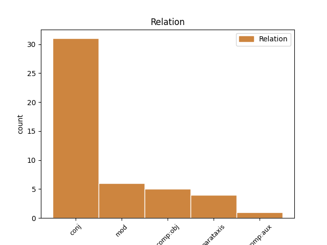
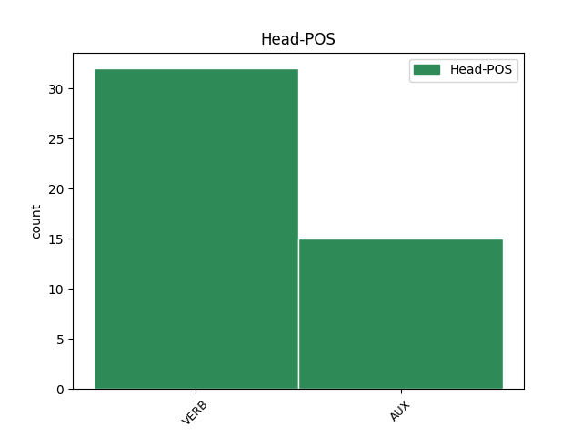
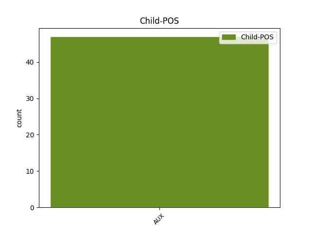

Distribution of features within this leaf



Agreement Rules sorted by frequency.
- When the dependent token is the conjunct(conj) of the head token, and the head token is VERB and the dependent token is AUX.
1 Rexuveneceu rexuvenecer VERB Vei30s Mood=Ind|Number=Sing|Person=3|Tense=Past|VerbForm=Fin 0 _ _ _
2 se _ _ _ _ 0 _ _ _
3 o _ _ _ _ 0 _ _ _
4 plantel _ _ _ _ 0 _ _ _
5 e _ _ _ _ 0 _ _ _
6 a _ _ _ _ 0 _ _ _
7 perda _ _ _ _ 0 _ _ _
8 de _ _ _ _ 0 _ _ _
9 traballo _ _ _ _ 0 _ _ _
10 non _ _ _ _ 0 _ _ _
11 foi ser AUX Vei30s Mood=Ind|Number=Sing|Person=3|Tense=Past|VerbForm=Fin 1 conj _ _
12 neta _ _ _ _ 0 _ _ _
13 . _ _ _ _ 0 _ _ _
1 De _ _ _ _ 0 _ _ _
2 non _ _ _ _ 0 _ _ _
3 parar _ _ _ _ 0 _ _ _
4 a _ _ _ _ 0 _ _ _
5 sangría _ _ _ _ 0 _ _ _
6 económica _ _ _ _ 0 _ _ _
7 e _ _ _ _ 0 _ _ _
8 social _ _ _ _ 0 _ _ _
9 de _ _ _ _ 0 _ _ _
10 Ferrol _ _ _ _ 0 _ _ _
11 , _ _ _ _ 0 _ _ _
12 o _ _ _ _ 0 _ _ _
13 seu _ _ _ _ 0 _ _ _
14 futuro _ _ _ _ 0 _ _ _
15 é ser AUX Vpi30s Mood=Ind|Number=Sing|Person=3|Tense=Pres|VerbForm=Fin 0 _ _ _
16 moi _ _ _ _ 0 _ _ _
17 negro _ _ _ _ 0 _ _ _
18 e _ _ _ _ 0 _ _ _
19 esta _ _ _ _ 0 _ _ _
20 preocupación _ _ _ _ 0 _ _ _
21 está estar AUX Vpi30s Mood=Ind|Number=Sing|Person=3|Tense=Pres|VerbForm=Fin 15 conj _ _
22 patente _ _ _ _ 0 _ _ _
23 xa _ _ _ _ 0 _ _ _
24 en _ _ _ _ 0 _ _ _
25 os _ _ _ _ 0 _ _ _
26 habitantes _ _ _ _ 0 _ _ _
27 de _ _ _ _ 0 _ _ _
28 a _ _ _ _ 0 _ _ _
29 cidade _ _ _ _ 0 _ _ _
30 , _ _ _ _ 0 _ _ _
31 agora _ _ _ _ 0 _ _ _
32 mesmo _ _ _ _ 0 _ _ _
33 máis _ _ _ _ 0 _ _ _
34 desmoralizados _ _ _ _ 0 _ _ _
35 que _ _ _ _ 0 _ _ _
36 nunca _ _ _ _ 0 _ _ _
37 . _ _ _ _ 0 _ _ _
1 Diga dicir VERB Vps30s Mood=Sub|Number=Sing|Person=3|Tense=Pres|VerbForm=Fin 0 _ _ _
2 me _ _ _ _ 0 _ _ _
3 o _ _ _ _ 0 _ _ _
4 que _ _ _ _ 0 _ _ _
5 é ser AUX Vpi30s Mood=Ind|Number=Sing|Person=3|Tense=Pres|VerbForm=Fin 1 comp:obj _ _
6 iso _ _ _ _ 0 _ _ _
7 de _ _ _ _ 0 _ _ _
8 a _ _ _ _ 0 _ _ _
9 ikebana _ _ _ _ 0 _ _ _
10 . _ _ _ _ 0 _ _ _
1 Emilio _ _ _ _ 0 _ _ _
2 Cagiao _ _ _ _ 0 _ _ _
3 , _ _ _ _ 0 _ _ _
4 secretario _ _ _ _ 0 _ _ _
5 de _ _ _ _ 0 _ _ _
6 a _ _ _ _ 0 _ _ _
7 CIG _ _ _ _ 0 _ _ _
8 en _ _ _ _ 0 _ _ _
9 Ferrol _ _ _ _ 0 _ _ _
10 , _ _ _ _ 0 _ _ _
11 di _ _ _ _ 0 _ _ _
12 que _ _ _ _ 0 _ _ _
13 " _ _ _ _ 0 _ _ _
14 e ser AUX Vpi30s Mood=Ind|Number=Sing|Person=3|Tense=Pres|VerbForm=Fin 0 _ _ _
15 unha _ _ _ _ 0 _ _ _
16 verdadeira _ _ _ _ 0 _ _ _
17 vergonza _ _ _ _ 0 _ _ _
18 que _ _ _ _ 0 _ _ _
19 se _ _ _ _ 0 _ _ _
20 estea _ _ _ _ 0 _ _ _
21 xogando _ _ _ _ 0 _ _ _
22 con _ _ _ _ 0 _ _ _
23 os _ _ _ _ 0 _ _ _
24 traballadores _ _ _ _ 0 _ _ _
25 por _ _ _ _ 0 _ _ _
26 non _ _ _ _ 0 _ _ _
27 dar _ _ _ _ 0 _ _ _
28 lle _ _ _ _ 0 _ _ _
29 solución _ _ _ _ 0 _ _ _
30 a _ _ _ _ 0 _ _ _
31 o _ _ _ _ 0 _ _ _
32 que _ _ _ _ 0 _ _ _
33 eles _ _ _ _ 0 _ _ _
34 chaman _ _ _ _ 0 _ _ _
35 " _ _ _ _ 0 _ _ _
36 flecos _ _ _ _ 0 _ _ _
37 " _ _ _ _ 0 _ _ _
38 , _ _ _ _ 0 _ _ _
39 cando _ _ _ _ 0 _ _ _
40 a _ _ _ _ 0 _ _ _
41 verdadeira _ _ _ _ 0 _ _ _
42 realidade _ _ _ _ 0 _ _ _
43 é ser AUX Vpi30s Mood=Ind|Number=Sing|Person=3|Tense=Pres|VerbForm=Fin 14 mod _ _
44 por _ _ _ _ 0 _ _ _
45 que _ _ _ _ 0 _ _ _
46 os _ _ _ _ 0 _ _ _
47 de _ _ _ _ 0 _ _ _
48 Comisións _ _ _ _ 0 _ _ _
49 queren _ _ _ _ 0 _ _ _
50 prexubilar _ _ _ _ 0 _ _ _
51 tamén _ _ _ _ 0 _ _ _
52 algúns _ _ _ _ 0 _ _ _
53 traballadores _ _ _ _ 0 _ _ _
54 de _ _ _ _ 0 _ _ _
55 as _ _ _ _ 0 _ _ _
56 compañias _ _ _ _ 0 _ _ _
57 auxiliares _ _ _ _ 0 _ _ _
58 con _ _ _ _ 0 _ _ _
59 o _ _ _ _ 0 _ _ _
60 pretexto _ _ _ _ 0 _ _ _
61 de _ _ _ _ 0 _ _ _
62 que _ _ _ _ 0 _ _ _
63 poden _ _ _ _ 0 _ _ _
64 ter _ _ _ _ 0 _ _ _
65 garantía _ _ _ _ 0 _ _ _
66 de _ _ _ _ 0 _ _ _
67 emprego _ _ _ _ 0 _ _ _
68 . _ _ _ _ 0 _ _ _
1 Pero _ _ _ _ 0 _ _ _
2 claro _ _ _ _ 0 _ _ _
3 , _ _ _ _ 0 _ _ _
4 Madonna _ _ _ _ 0 _ _ _
5 fai _ _ _ _ 0 _ _ _
6 un _ _ _ _ 0 _ _ _
7 concerto _ _ _ _ 0 _ _ _
8 e _ _ _ _ 0 _ _ _
9 gasta _ _ _ _ 0 _ _ _
10 se _ _ _ _ 0 _ _ _
11 moito _ _ _ _ 0 _ _ _
12 diñeiro _ _ _ _ 0 _ _ _
13 en _ _ _ _ 0 _ _ _
14 promoción _ _ _ _ 0 _ _ _
15 , _ _ _ _ 0 _ _ _
16 sen _ _ _ _ 0 _ _ _
17 embargo _ _ _ _ 0 _ _ _
18 toca _ _ _ _ 0 _ _ _
19 un _ _ _ _ 0 _ _ _
20 grande _ _ _ _ 0 _ _ _
21 pianista _ _ _ _ 0 _ _ _
22 e _ _ _ _ 0 _ _ _
23 non _ _ _ _ 0 _ _ _
24 se _ _ _ _ 0 _ _ _
25 fai facer VERB Vpi30s Mood=Ind|Number=Sing|Person=3|Tense=Pres|VerbForm=Fin 0 _ _ _
26 ese _ _ _ _ 0 _ _ _
27 mesmo _ _ _ _ 0 _ _ _
28 esforzo _ _ _ _ 0 _ _ _
29 promocional _ _ _ _ 0 _ _ _
30 , _ _ _ _ 0 _ _ _
31 por _ _ _ _ 0 _ _ _
32 lo _ _ _ _ 0 _ _ _
33 que _ _ _ _ 0 _ _ _
34 estamos estar AUX Vpi10p Mood=Ind|Number=Plur|Person=1|Tense=Pres|VerbForm=Fin 25 mod _ _
35 tamén _ _ _ _ 0 _ _ _
36 diante _ _ _ _ 0 _ _ _
37 de _ _ _ _ 0 _ _ _
38 razóns _ _ _ _ 0 _ _ _
39 comerciais _ _ _ _ 0 _ _ _
40 . _ _ _ _ 0 _ _ _
1 En _ _ _ _ 0 _ _ _
2 o _ _ _ _ 0 _ _ _
3 que _ _ _ _ 0 _ _ _
4 si _ _ _ _ 0 _ _ _
5 está _ _ _ _ 0 _ _ _
6 de _ _ _ _ 0 _ _ _
7 acordo _ _ _ _ 0 _ _ _
8 é ser AUX Vpi30s Mood=Ind|Number=Sing|Person=3|Tense=Pres|VerbForm=Fin 13 comp:aux _ _
9 en _ _ _ _ 0 _ _ _
10 que _ _ _ _ 0 _ _ _
11 os _ _ _ _ 0 _ _ _
12 cidadáns _ _ _ _ 0 _ _ _
13 deben deber AUX Vpi30p Mood=Ind|Number=Plur|Person=3|Tense=Pres|VerbForm=Fin 0 _ _ _
14 de _ _ _ _ 0 _ _ _
15 visualizar _ _ _ _ 0 _ _ _
16 un _ _ _ _ 0 _ _ _
17 goberno _ _ _ _ 0 _ _ _
18 conxunto _ _ _ _ 0 _ _ _
19 entre _ _ _ _ 0 _ _ _
20 ambas _ _ _ _ 0 _ _ _
21 as _ _ _ _ 0 _ _ _
22 formacións _ _ _ _ 0 _ _ _
23 , _ _ _ _ 0 _ _ _
24 condenadas _ _ _ _ 0 _ _ _
25 a _ _ _ _ 0 _ _ _
26 entender _ _ _ _ 0 _ _ _
27 se _ _ _ _ 0 _ _ _
28 , _ _ _ _ 0 _ _ _
29 por _ _ _ _ 0 _ _ _
30 moito _ _ _ _ 0 _ _ _
31 que _ _ _ _ 0 _ _ _
32 se _ _ _ _ 0 _ _ _
33 disputen _ _ _ _ 0 _ _ _
34 a _ _ _ _ 0 _ _ _
35 primacía _ _ _ _ 0 _ _ _
36 a _ _ _ _ 0 _ _ _
37 a _ _ _ _ 0 _ _ _
38 hora _ _ _ _ 0 _ _ _
39 de _ _ _ _ 0 _ _ _
40 liderar _ _ _ _ 0 _ _ _
41 ese _ _ _ _ 0 _ _ _
42 cambio _ _ _ _ 0 _ _ _
43 que _ _ _ _ 0 _ _ _
44 se _ _ _ _ 0 _ _ _
45 albisca _ _ _ _ 0 _ _ _
46 en _ _ _ _ 0 _ _ _
47 a _ _ _ _ 0 _ _ _
48 Galiza _ _ _ _ 0 _ _ _
49 . _ _ _ _ 0 _ _ _
1 Teñen _ _ _ _ 0 _ _ _
2 que _ _ _ _ 0 _ _ _
3 saber _ _ _ _ 0 _ _ _
4 que _ _ _ _ 0 _ _ _
5 non _ _ _ _ 0 _ _ _
6 había haber VERB Vii30s Mood=Ind|Number=Sing|Person=3|Tense=Imp|VerbForm=Fin 0 _ _ _
7 ningún _ _ _ _ 0 _ _ _
8 plano _ _ _ _ 0 _ _ _
9 serio _ _ _ _ 0 _ _ _
10 para _ _ _ _ 0 _ _ _
11 facer _ _ _ _ 0 _ _ _
12 lle _ _ _ _ 0 _ _ _
13 fronte _ _ _ _ 0 _ _ _
14 a _ _ _ _ 0 _ _ _
15 o _ _ _ _ 0 _ _ _
16 chapapote _ _ _ _ 0 _ _ _
17 en _ _ _ _ 0 _ _ _
18 as _ _ _ _ 0 _ _ _
19 rías _ _ _ _ 0 _ _ _
20 , _ _ _ _ 0 _ _ _
21 o _ _ _ _ 0 _ _ _
22 único _ _ _ _ 0 _ _ _
23 eran ser AUX Vii30p Mood=Ind|Number=Plur|Person=3|Tense=Imp|VerbForm=Fin 6 parataxis _ _
24 os _ _ _ _ 0 _ _ _
25 plásticos _ _ _ _ 0 _ _ _
26 para _ _ _ _ 0 _ _ _
27 defender _ _ _ _ 0 _ _ _
28 as _ _ _ _ 0 _ _ _
29 bateas _ _ _ _ 0 _ _ _
30 e _ _ _ _ 0 _ _ _
31 dirixir _ _ _ _ 0 _ _ _
32 o _ _ _ _ 0 _ _ _
33 fuel _ _ _ _ 0 _ _ _
34 a _ _ _ _ 0 _ _ _
35 as _ _ _ _ 0 _ _ _
36 zonas _ _ _ _ 0 _ _ _
37 de _ _ _ _ 0 _ _ _
38 sacrificio _ _ _ _ 0 _ _ _
39 internas _ _ _ _ 0 _ _ _
40 , _ _ _ _ 0 _ _ _
41 que _ _ _ _ 0 _ _ _
42 non _ _ _ _ 0 _ _ _
43 se _ _ _ _ 0 _ _ _
44 puxeron _ _ _ _ 0 _ _ _
45 as _ _ _ _ 0 _ _ _
46 barreiras _ _ _ _ 0 _ _ _
47 prometidas _ _ _ _ 0 _ _ _
48 , _ _ _ _ 0 _ _ _
49 que _ _ _ _ 0 _ _ _
50 as _ _ _ _ 0 _ _ _
51 quixeron _ _ _ _ 0 _ _ _
52 poñer _ _ _ _ 0 _ _ _
53 as _ _ _ _ 0 _ _ _
54 romperon _ _ _ _ 0 _ _ _
55 os _ _ _ _ 0 _ _ _
56 propios _ _ _ _ 0 _ _ _
57 técnicos _ _ _ _ 0 _ _ _
58 de _ _ _ _ 0 _ _ _
59 SASEMAR _ _ _ _ 0 _ _ _
60 . _ _ _ _ 0 _ _ _
1 Van _ _ _ _ 0 _ _ _
2 quentando _ _ _ _ 0 _ _ _
3 o _ _ _ _ 0 _ _ _
4 ambiente _ _ _ _ 0 _ _ _
5 , _ _ _ _ 0 _ _ _
6 e _ _ _ _ 0 _ _ _
7 chamando _ _ _ _ 0 _ _ _
8 a _ _ _ _ 0 _ _ _
9 os _ _ _ _ 0 _ _ _
10 seus _ _ _ _ 0 _ _ _
11 aliados _ _ _ _ 0 _ _ _
12 para _ _ _ _ 0 _ _ _
13 que _ _ _ _ 0 _ _ _
14 lles _ _ _ _ 0 _ _ _
15 axuden _ _ _ _ 0 _ _ _
16 a _ _ _ _ 0 _ _ _
17 poñer _ _ _ _ 0 _ _ _
18 lume _ _ _ _ 0 _ _ _
19 en _ _ _ _ 0 _ _ _
20 as _ _ _ _ 0 _ _ _
21 denuncias _ _ _ _ 0 _ _ _
22 , _ _ _ _ 0 _ _ _
23 que _ _ _ _ 0 _ _ _
24 normalmente _ _ _ _ 0 _ _ _
25 son ser AUX Vpi30p Mood=Ind|Number=Plur|Person=3|Tense=Pres|VerbForm=Fin 0 _ _ _
26 mentiras _ _ _ _ 0 _ _ _
27 ( _ _ _ _ 0 _ _ _
28 onde _ _ _ _ 0 _ _ _
29 están estar AUX Vpi30p Mood=Ind|Number=Plur|Person=3|Tense=Pres|VerbForm=Fin 25 parataxis _ _
30 as _ _ _ _ 0 _ _ _
31 armas _ _ _ _ 0 _ _ _
32 terroríficas _ _ _ _ 0 _ _ _
33 de _ _ _ _ 0 _ _ _
34 Sadan _ _ _ _ 0 _ _ _
35 ? _ _ _ _ 0 _ _ _
36 ) _ _ _ _ 0 _ _ _
37 . _ _ _ _ 0 _ _ _
Disagree Examples:
1 A _ _ _ _ 0 _ _ _
2 cidadanía _ _ _ _ 0 _ _ _
3 galega _ _ _ _ 0 _ _ _
4 é ser AUX Vpi30s Mood=Ind|Number=Sing|Person=3|Tense=Pres|VerbForm=Fin 0 _ _ _
5 renunciábel _ _ _ _ 0 _ _ _
6 , _ _ _ _ 0 _ _ _
7 pero _ _ _ _ 0 _ _ _
8 non _ _ _ _ 0 _ _ _
9 poderá poder AUX Vfi30s Mood=Ind|Number=Sing|Person=3|Tense=Fut|VerbForm=Fin 4 conj _ _
10 privar _ _ _ _ 0 _ _ _
11 se _ _ _ _ 0 _ _ _
12 de _ _ _ _ 0 _ _ _
13 ela _ _ _ _ 0 _ _ _
14 sen _ _ _ _ 0 _ _ _
15 o _ _ _ _ 0 _ _ _
16 consentimento _ _ _ _ 0 _ _ _
17 de _ _ _ _ 0 _ _ _
18 a _ _ _ _ 0 _ _ _
19 persoa _ _ _ _ 0 _ _ _
20 que _ _ _ _ 0 _ _ _
21 a _ _ _ _ 0 _ _ _
22 teña _ _ _ _ 0 _ _ _
23 recibida _ _ _ _ 0 _ _ _
24 . _ _ _ _ 0 _ _ _
1 Estas _ _ _ _ 0 _ _ _
2 cousas _ _ _ _ 0 _ _ _
3 , _ _ _ _ 0 _ _ _
4 propias _ _ _ _ 0 _ _ _
5 de _ _ _ _ 0 _ _ _
6 un _ _ _ _ 0 _ _ _
7 babeca _ _ _ _ 0 _ _ _
8 , _ _ _ _ 0 _ _ _
9 saen _ _ _ _ 0 _ _ _
10 de _ _ _ _ 0 _ _ _
11 a _ _ _ _ 0 _ _ _
12 cabaza _ _ _ _ 0 _ _ _
13 , _ _ _ _ 0 _ _ _
14 non _ _ _ _ 0 _ _ _
15 de _ _ _ _ 0 _ _ _
16 a _ _ _ _ 0 _ _ _
17 cabeza _ _ _ _ 0 _ _ _
18 , _ _ _ _ 0 _ _ _
19 de _ _ _ _ 0 _ _ _
20 alguén _ _ _ _ 0 _ _ _
21 que _ _ _ _ 0 _ _ _
22 pasou pasar VERB Vei30s Mood=Ind|Number=Sing|Person=3|Tense=Past|VerbForm=Fin 0 _ _ _
23 por _ _ _ _ 0 _ _ _
24 la _ _ _ _ 0 _ _ _
25 universidade _ _ _ _ 0 _ _ _
26 e _ _ _ _ 0 _ _ _
27 que _ _ _ _ 0 _ _ _
28 para _ _ _ _ 0 _ _ _
29 máis _ _ _ _ 0 _ _ _
30 inri _ _ _ _ 0 _ _ _
31 é ser AUX Vpi30s Mood=Ind|Number=Sing|Person=3|Tense=Pres|VerbForm=Fin 22 conj _ _
32 profesor _ _ _ _ 0 _ _ _
33 de _ _ _ _ 0 _ _ _
34 arte _ _ _ _ 0 _ _ _
35 . _ _ _ _ 0 _ _ _
1 que _ _ _ _ 0 _ _ _
2 o _ _ _ _ 0 _ _ _
3 PP _ _ _ _ 0 _ _ _
4 rache rachar VERB Vps30s Mood=Sub|Number=Sing|Person=3|Tense=Pres|VerbForm=Fin 0 _ _ _
5 despois _ _ _ _ 0 _ _ _
6 de _ _ _ _ 0 _ _ _
7 as _ _ _ _ 0 _ _ _
8 eleccións _ _ _ _ 0 _ _ _
9 e _ _ _ _ 0 _ _ _
10 o _ _ _ _ 0 _ _ _
11 PSOE _ _ _ _ 0 _ _ _
12 puidese poder AUX Ves30s Mood=Sub|Number=Sing|Person=3|Tense=Past|VerbForm=Fin 4 conj _ _
13 chegar _ _ _ _ 0 _ _ _
14 a _ _ _ _ 0 _ _ _
15 un _ _ _ _ 0 _ _ _
16 acordo _ _ _ _ 0 _ _ _
17 con _ _ _ _ 0 _ _ _
18 o _ _ _ _ 0 _ _ _
19 sector _ _ _ _ 0 _ _ _
20 autóctono _ _ _ _ 0 _ _ _
21 de _ _ _ _ 0 _ _ _
22 a _ _ _ _ 0 _ _ _
23 dereita _ _ _ _ 0 _ _ _
24 . _ _ _ _ 0 _ _ _
1 Non _ _ _ _ 0 _ _ _
2 era ser AUX Vii30s Mood=Ind|Number=Sing|Person=3|Tense=Imp|VerbForm=Fin 0 _ _ _
3 necesario _ _ _ _ 0 _ _ _
4 e _ _ _ _ 0 _ _ _
5 foi ser AUX Vei30s Mood=Ind|Number=Sing|Person=3|Tense=Past|VerbForm=Fin 2 conj _ _
6 suficiente _ _ _ _ 0 _ _ _
7 con _ _ _ _ 0 _ _ _
8 unha _ _ _ _ 0 _ _ _
9 insinuación _ _ _ _ 0 _ _ _
10 de _ _ _ _ 0 _ _ _
11 Riera _ _ _ _ 0 _ _ _
12 para _ _ _ _ 0 _ _ _
13 que _ _ _ _ 0 _ _ _
14 a _ _ _ _ 0 _ _ _
15 alcaldesa _ _ _ _ 0 _ _ _
16 fixese _ _ _ _ 0 _ _ _
17 mutis _ _ _ _ 0 _ _ _
18 e _ _ _ _ 0 _ _ _
19 desaparecese _ _ _ _ 0 _ _ _
20 de _ _ _ _ 0 _ _ _
21 a _ _ _ _ 0 _ _ _
22 escena _ _ _ _ 0 _ _ _
23 . _ _ _ _ 0 _ _ _
1 Dicía dicir VERB Vii30s Mood=Ind|Number=Sing|Person=3|Tense=Imp|VerbForm=Fin 0 _ _ _
2 Jean _ _ _ _ 0 _ _ _
3 Cocteau _ _ _ _ 0 _ _ _
4 que _ _ _ _ 0 _ _ _
5 a _ _ _ _ 0 _ _ _
6 moda _ _ _ _ 0 _ _ _
7 é ser AUX Vpi30s Mood=Ind|Number=Sing|Person=3|Tense=Pres|VerbForm=Fin 1 comp:obj _ _
8 o _ _ _ _ 0 _ _ _
9 que _ _ _ _ 0 _ _ _
10 pasa _ _ _ _ 0 _ _ _
11 de _ _ _ _ 0 _ _ _
12 moda _ _ _ _ 0 _ _ _
13 . _ _ _ _ 0 _ _ _